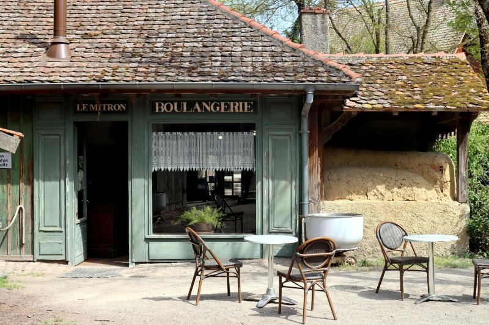

Notre savoir-faire

Nos produits phares
- Nos pains
Tradition et pains spéciaux
- Notre viennoiserie
Croissants, pains au chocolat, pains aux raisins
- Notre snaking
Sandwichs, salades, quiches et pizzas